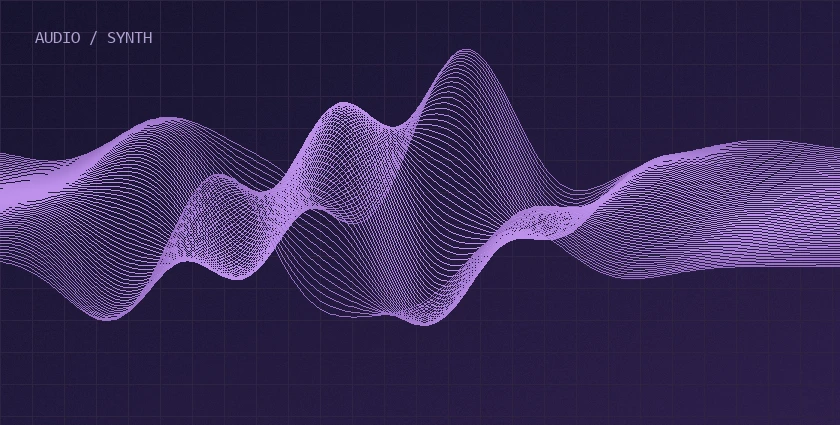

听一段安静
戴上耳机，录下房间里十秒钟的声音。空调、街道和远处的说话声混在一起，会形成一层很薄的背景。把这段录音拉进工程，先不做处理，听清它原本的起伏。
找到接缝
从相对稳定的部分截取两三秒，复制后首尾连接。在接缝上做很短的交叉淡化，仔细听有没有突然跳出的咔哒声。若能听出某个独特的声响在反复出现，换一段更长的素材。
让底声进出乐句
在一段有明显停顿的音乐下方放入这条轨道。从静音慢慢推高，直到能察觉房间的存在，再回退一点。最后给开头和结尾做淡入淡出。它的任务只是把两段安静连接起来。
继续阅读
从一个地址，读懂 C 指针